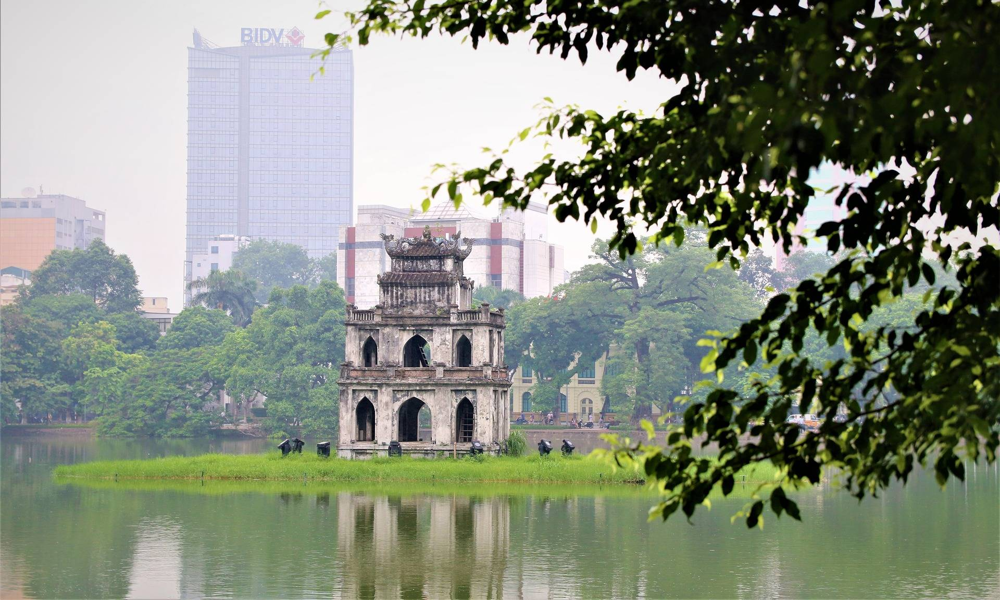

Trung tâm Hà Nội
Hồ Hoàn Kiếm
Hồ Hoàn Kiếm nằm ngay giữa trung tâm thành phố với tháp rùa cổ kính nằm trên bán đảo nhỏ giữa hồ. Bên cạnh hồ là những di sản kiến trúc như tháp Bút, đài Nghiên, cầu Thê Húc.
Văn Miếu - Quốc Tử Giám

Đây là nơi thờ Khổng Tử, đặt bia tiến sĩ và là trường đại học đầu tiên ở Việt Nam. Trước mỗi kỳ thi, các sĩ tử thường đến đây để cầu may.
Khu phố cổ

Đây là điểm nhấn của Hà Nội, với 36 phố phường còn lưu lại những ngôi nhà cổ và dáng vẻ đường phố từ thế kỷ 19. Bạn sẽ cảm nhận được nét đẹp gần gũi và thân quen của người Hà Nội ở đây.
Quảng trường Ba Đình

Quảng trường Ba Đình lịch sử là nơi Bác Hồ đã đọc tuyên ngôn độc lập ra đời nước Cộng Hòa Xã Hội Chủ Nghĩa Việt Nam. Lăng Chủ tịch Hồ Chí Minh là nơi đặt và lưu giữ thi hài của Người.
Khu vực xung quanh Hà Nội
Làng gốm Bát Tràng
Làng gốm nằm cách trung tâm thành phố 20km bên tả ngạn sông Hồng. Đây là nơi sản xuất gốm sứ nổi tiếng khắp cả nước từ bao đời nay.
Làng cổ Đường Lâm
Ngôi làng vẫn còn giữ nguyên những giá trị vật thể và phi vật thể về cung cách sinh sống của người Việt cổ. Đây cũng là nơi ra đời rất nhiều bộ ảnh đẹp
Vườn quốc gia Ba Vì
Đây là nơi bạn có thể thưởng thức một không gian thiên nhiên trong lành, tươi mát. Nơi đây vẫn còn lưu giữ một số công trình cổ do Pháp xây dựng.
Làng văn hóa các dân tộc
Muốn trải nghiệm nhiều nền văn hoá mà không phải đi xa, không đâu bằng làng Văn hóa - Du lịch các dân tộc Việt Nam ở Đồng Mô.